3. Análisis exploratorio (II): componentes temporal, espacial y espacio-temporal#
El dataset tiene fecha (semana) y coordenadas (centroides de los municipios de origen y de las ciudades de las centrales), por lo que las secciones 2.6, 2.7 y 2.8 del enunciado son obligatorias. Igual que en el capítulo anterior, solo se usa el periodo de entrenamiento (semanas objetivo hasta el 27/10/2024).
import sys
import warnings
sys.path.insert(0, "../src")
warnings.filterwarnings("ignore")
import matplotlib.pyplot as plt
import numpy as np
import pandas as pd
import seaborn as sns
from scipy import stats
from statsmodels.graphics.tsaplots import plot_acf, plot_pacf
from statsmodels.tsa.seasonal import STL
from statsmodels.tsa.stattools import adfuller, kpss
import utils as u
u.estilo()
pd.set_option("display.width", 160)
rng = np.random.default_rng(u.SEMILLA)
panel = u.cargar_panel()
train, _ = u.particion(panel)
del panel
y = u.VAR_OBJETIVO
REGION = {
"AMAZONAS": "Amazonía", "CAQUETÁ": "Amazonía", "GUAINÍA": "Amazonía", "GUAVIARE": "Amazonía",
"PUTUMAYO": "Amazonía", "VAUPÉS": "Amazonía",
"ANTIOQUIA": "Andina", "BOYACÁ": "Andina", "CALDAS": "Andina", "CUNDINAMARCA": "Andina",
"BOGOTÁ, D.C.": "Andina", "HUILA": "Andina", "NORTE DE SANTANDER": "Andina", "QUINDÍO": "Andina",
"RISARALDA": "Andina", "SANTANDER": "Andina", "TOLIMA": "Andina",
"ATLÁNTICO": "Caribe", "BOLÍVAR": "Caribe", "CESAR": "Caribe", "CÓRDOBA": "Caribe",
"LA GUAJIRA": "Caribe", "MAGDALENA": "Caribe", "SUCRE": "Caribe",
"ARCHIPIÉLAGO DE SAN ANDRÉS, PROVIDENCIA Y SANTA CATALINA": "Caribe",
"ARAUCA": "Orinoquía", "CASANARE": "Orinoquía", "META": "Orinoquía", "VICHADA": "Orinoquía",
"CAUCA": "Pacífica", "CHOCÓ": "Pacífica", "NARIÑO": "Pacífica", "VALLE DEL CAUCA": "Pacífica",
}
train["region_origen"] = train["depto_origen"].map(REGION)
2.6 Componente temporal#
2.6.1 Validación de la variable temporal#
env = pd.read_parquet(u.INTERIM / "sipsa_a_envios.parquet", columns=["mercado", "fecha", "kg"])
env = env[(env["kg"] > 0) & env["fecha"].notna() & (env["fecha"] <= u.FIN_TRAIN + pd.Timedelta(days=6))]
env["mercado"] = env["mercado"].astype(str).replace(
{"Cali, Santa Helena": "Cali, Santa Elena", "Pereira, La 41-Impala": "Pereira, La 41"})
dif = train.sort_values("semana").groupby(["mercado", "cod_mpio"])["semana"].diff().dropna()
print("Formato: fechas diarias dd/mm/aaaa en origen, sin hora ni zona horaria (hora local de Colombia, UTC-5).")
print(f"Cobertura del entrenamiento (semana t): {train['semana'].min().date()} a {train['semana'].max().date()}")
print(f"Días distintos con registros: {env['fecha'].nunique():,} de "
f"{(env['fecha'].max() - env['fecha'].min()).days + 1:,} días calendario")
print("Separación entre semanas consecutivas elegibles de un mismo corredor (días):")
print((dif.dt.days).value_counts().head(6).to_string())
print(f"Filas corredor-semana duplicadas: {train.duplicated(['mercado', 'cod_mpio', 'semana']).sum()}")
dias_sin = pd.date_range(env["fecha"].min(), env["fecha"].max()).difference(env["fecha"].unique())
print(f"Días sin ningún registro en el país: {len(dias_sin)}; ejemplos: {[d.strftime('%Y-%m-%d') for d in dias_sin[:8]]}")
print("Días sin registro por mes-día más frecuentes:",
pd.Series(dias_sin.strftime("%m-%d")).value_counts().head(5).to_dict())
Formato: fechas diarias dd/mm/aaaa en origen, sin hora ni zona horaria (hora local de Colombia, UTC-5).
Cobertura del entrenamiento (semana t): 2018-01-22 a 2024-10-14
Días distintos con registros: 2,485 de 2,497 días calendario
Separación entre semanas consecutivas elegibles de un mismo corredor (días):
semana
7 600444
14 3408
21 1879
28 1130
35 828
63 751
Filas corredor-semana duplicadas: 0
Días sin ningún registro en el país: 12; ejemplos: ['2019-01-01', '2019-04-19', '2019-12-25', '2020-01-01', '2020-12-25', '2021-01-01', '2021-04-02', '2021-12-25']
Días sin registro por mes-día más frecuentes: {'01-01': 5, '12-25': 4, '04-19': 1, '04-02': 1, '04-07': 1}
2.6.2 Visualización: serie completa, agregaciones y estacionalidad#
Para que la serie nacional no refleje la entrada de centrales nuevas (2023), se construye con las 29 centrales presentes desde 2018.
base_merc = env.groupby("mercado")["fecha"].min()
merc_const = base_merc[base_merc < "2018-03-01"].index
envc = env[env["mercado"].isin(merc_const)]
diario = envc.groupby("fecha")["kg"].sum() / 1e3
semanal = diario.resample("W-SUN", label="left", closed="left").sum()
semanal.index = semanal.index + pd.Timedelta(days=1)
semanal = semanal.iloc[1:-1]
mensual = diario.resample("MS").sum()
tasa = train.groupby("semana_t1")[y].mean()
fig, axes = plt.subplots(3, 1, figsize=(12, 9), sharex=True)
axes[0].plot(diario.index, diario.values, lw=0.3, color="#868e96")
axes[0].set_title(f"Toneladas diarias ({len(merc_const)} centrales constantes)")
axes[1].plot(semanal.index, semanal.values, color="#1971c2", lw=1)
axes[1].plot(mensual.index, mensual.values / 4.345, color="black", lw=1.5, label="mensual / 4,345")
axes[1].set_title("Toneladas semanales")
axes[1].legend()
axes[2].plot(tasa.index, tasa.values, color="#e03131", lw=0.9)
axes[2].set_title("Tasa semanal de interrupción de corredores (objetivo)")
for ax in axes:
ax.axvspan(pd.Timestamp("2020-03-23"), pd.Timestamp("2020-05-31"), color="#ffd43b", alpha=0.3)
ax.axvspan(pd.Timestamp("2021-04-28"), pd.Timestamp("2021-06-15"), color="#ff8787", alpha=0.3)
axes[0].text(pd.Timestamp("2020-03-25"), axes[0].get_ylim()[1] * 0.9, "confinamiento", fontsize=8)
axes[0].text(pd.Timestamp("2021-04-30"), axes[0].get_ylim()[1] * 0.9, "paro nacional", fontsize=8)
plt.tight_layout()
plt.show()
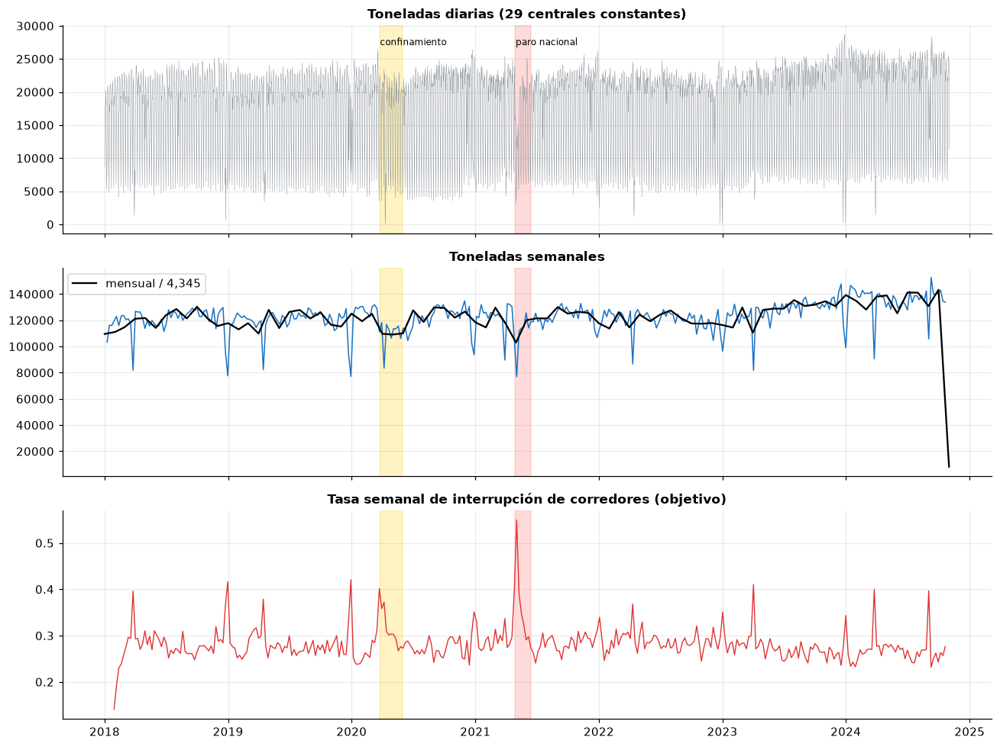
dsem = pd.DataFrame({"t": diario, "dia": diario.index.day_name()})
orden = ["Monday", "Tuesday", "Wednesday", "Thursday", "Friday", "Saturday", "Sunday"]
fig, axes = plt.subplots(1, 3, figsize=(16, 4.2))
sns.boxplot(data=dsem, x="dia", y="t", order=orden, ax=axes[0], color="#74c0fc", fliersize=1)
axes[0].set_xticklabels(["lun", "mar", "mié", "jue", "vie", "sáb", "dom"])
axes[0].set_title("Toneladas diarias por día de la semana")
sm = pd.DataFrame({"t": semanal, "mes": semanal.index.month})
sns.boxplot(data=sm, x="mes", y="t", ax=axes[1], color="#74c0fc", fliersize=1)
axes[1].set_title("Toneladas semanales por mes")
tw = pd.DataFrame({"tasa": tasa, "mes": tasa.index.month})
sns.boxplot(data=tw, x="mes", y="tasa", ax=axes[2], color="#ffa8a8", fliersize=1)
axes[2].set_title("Tasa de interrupción por mes de t+1")
plt.tight_layout()
plt.show()
print("Kruskal-Wallis, tasa de interrupción por mes:", stats.kruskal(*[g["tasa"] for _, g in tw.groupby("mes")]))
print("Tasa media por número de festivos en t+1:")
print(train.groupby("festivos_t1")[y].agg(["mean", "size"]).round(3).to_string())
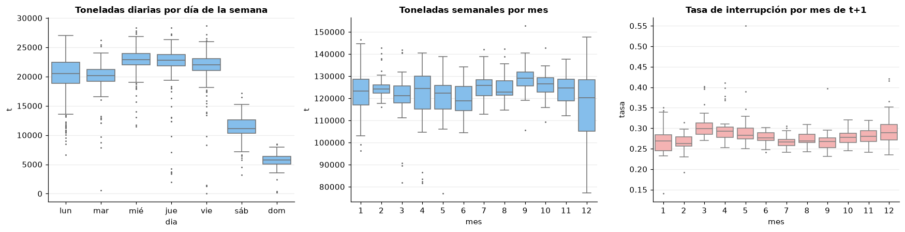
Kruskal-Wallis, tasa de interrupción por mes: KruskalResult(statistic=np.float64(82.54784397457446), pvalue=np.float64(4.736099492474647e-13))
Tasa media por número de festivos en t+1:
mean size
festivos_t1
0 0.276 425573
1 0.290 183862
2 0.378 10802
3 0.400 2007
2.6.3 Descomposición STL#
fig, axes = plt.subplots(4, 2, figsize=(14, 9), sharex="col")
for j, (serie, nombre) in enumerate([(np.log(semanal), "log toneladas semanales"), (tasa, "tasa de interrupción")]):
res = STL(serie.asfreq("W-MON").interpolate(), period=52, robust=True).fit()
for i, (comp, t) in enumerate(zip([res.observed, res.trend, res.seasonal, res.resid],
["observado", "tendencia", "estacional", "residuo"])):
axes[i, j].plot(comp.index, comp.values, lw=0.9)
axes[i, j].set_title(f"{nombre}: {t}", fontsize=9)
var_r = res.resid.var()
fs = max(0, 1 - var_r / (res.seasonal + res.resid).var())
ft = max(0, 1 - var_r / (res.trend + res.resid).var())
print(f"{nombre}: fuerza de la tendencia = {ft:.2f}; fuerza de la estacionalidad = {fs:.2f}")
plt.tight_layout()
plt.show()
log toneladas semanales: fuerza de la tendencia = 0.28; fuerza de la estacionalidad = 0.39
tasa de interrupción: fuerza de la tendencia = 0.08; fuerza de la estacionalidad = 0.41
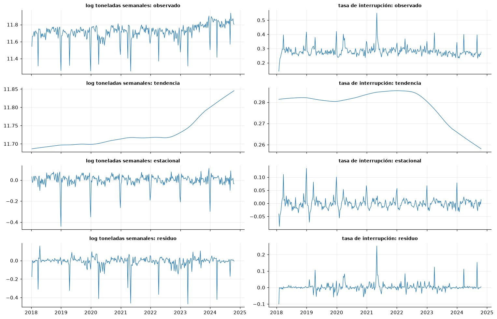
2.6.4 Estacionariedad#
fig, axes = plt.subplots(1, 2, figsize=(13, 3.8))
for ax, (serie, nombre) in zip(axes, [(np.log(semanal), "log toneladas"), (tasa, "tasa de interrupción")]):
ax.plot(serie, lw=0.6, color="#adb5bd")
ax.plot(serie.rolling(26).mean(), label="media móvil 26", color="#1971c2")
ax2 = ax.twinx()
ax2.plot(serie.rolling(26).std(), label="desv. móvil 26", color="#e03131")
ax.set_title(nombre)
ax.legend(loc="upper left", fontsize=8)
ax2.legend(loc="upper right", fontsize=8)
ax2.grid(False)
plt.tight_layout()
plt.show()
from statsmodels.tools.sm_exceptions import InterpolationWarning
warnings.simplefilter("ignore", InterpolationWarning) # KPSS avisa cuando p está fuera de su tabla (0,01-0,10)
filas = []
for serie, nombre in [(np.log(semanal), "log toneladas semanales"), (tasa, "tasa de interrupción")]:
adf = adfuller(serie.dropna(), autolag="AIC")
kp = kpss(serie.dropna(), regression="c", nlags="auto")
kpt = kpss(serie.dropna(), regression="ct", nlags="auto")
filas.append({"serie": nombre, "ADF estad.": adf[0], "ADF p": adf[1], "KPSS nivel p": kp[1],
"KPSS tendencia p": kpt[1]})
pd.DataFrame(filas).round(4)
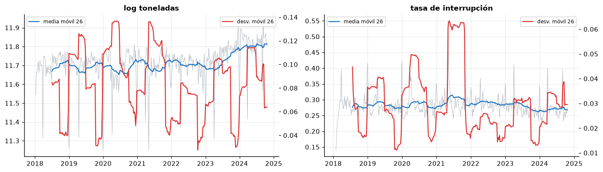
| serie | ADF estad. | ADF p | KPSS nivel p | KPSS tendencia p | |
|---|---|---|---|---|---|
| 0 | log toneladas semanales | -3.7794 | 0.0031 | 0.01 | 0.0100 |
| 1 | tasa de interrupción | -12.0391 | 0.0000 | 0.10 | 0.0109 |
2.6.5 Dependencia temporal: ACF, PACF y correlación cruzada#
fig, axes = plt.subplots(1, 3, figsize=(16, 3.8))
plot_acf(tasa, lags=60, ax=axes[0], title="ACF tasa de interrupción")
plot_pacf(tasa, lags=30, ax=axes[1], title="PACF tasa de interrupción", method="ywm")
# frac_caida_nacional_t está indexada por t; la tasa objetivo por t+1. Se alinean explícitamente.
frac = train.groupby("semana")["frac_caida_nacional_t"].mean()
frac.index = frac.index + pd.Timedelta(weeks=1) # ahora indexada por t+1
al = pd.concat([frac.rename("frac"), tasa.rename("tasa")], axis=1).dropna()
cc = [al["tasa"].corr(al["frac"].shift(k)) for k in range(9)]
axes[2].bar(range(9), cc, color="#7048e8")
axes[2].set_title("Caídas nacionales en t-k vs tasa objetivo en t+1", fontsize=10)
axes[2].set_xlabel("rezago k (semanas)")
plt.tight_layout()
plt.show()
# Autocorrelación del objetivo dentro de cada corredor
ts = train.sort_values("semana")[["mercado", "cod_mpio", "semana", y]].copy()
filas = []
for k in [1, 2, 3, 4, 8, 13, 26, 52]:
lag = ts.groupby(["mercado", "cod_mpio"])[y].shift(k)
gap = ts["semana"] - ts.groupby(["mercado", "cod_mpio"])["semana"].shift(k)
ok = lag.notna() & (gap == pd.Timedelta(weeks=k))
filas.append({"rezago": k, "corr(y_t, y_t-k) intra-corredor": np.corrcoef(ts.loc[ok, y], lag[ok])[0, 1],
"pares": int(ok.sum())})
pd.DataFrame(filas).round(3)
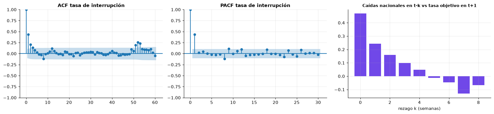
| rezago | corr(y_t, y_t-k) intra-corredor | pares | |
|---|---|---|---|
| 0 | 1 | 0.281 | 600444 |
| 1 | 2 | 0.250 | 582368 |
| 2 | 3 | 0.198 | 566447 |
| 3 | 4 | 0.185 | 551964 |
| 4 | 8 | 0.104 | 504285 |
| 5 | 13 | 0.114 | 463523 |
| 6 | 26 | 0.115 | 396946 |
| 7 | 52 | 0.125 | 319823 |
2.6.6 Cambios de régimen, eventos y calendario#
def punto_cambio(x):
"""Un punto de cambio en la media por mínimos cuadrados (segmentación binaria de un paso)."""
x = np.asarray(x)
costos = [((x[:k] - x[:k].mean()) ** 2).sum() + ((x[k:] - x[k:].mean()) ** 2).sum()
for k in range(26, len(x) - 26)]
return int(np.argmin(costos)) + 26
k = punto_cambio(tasa.values)
cusum = (tasa - tasa.mean()).cumsum()
fig, axes = plt.subplots(1, 2, figsize=(14, 3.8))
axes[0].plot(cusum, color="#495057")
axes[0].axvline(tasa.index[k], color="#e03131", ls="--")
axes[0].set_title("CUSUM de la tasa de interrupción")
axes[1].plot(tasa, lw=0.6, color="#adb5bd")
axes[1].hlines([tasa.iloc[:k].mean(), tasa.iloc[k:].mean()], [tasa.index[0], tasa.index[k]],
[tasa.index[k], tasa.index[-1]], color="#e03131")
axes[1].set_title("Media antes y después del punto de cambio estimado")
plt.tight_layout()
plt.show()
print(f"Punto de cambio estimado: {tasa.index[k].date()}; media antes {tasa.iloc[:k].mean():.3f}, después {tasa.iloc[k:].mean():.3f}")
eventos = {"Confinamiento COVID (23/03-31/05/2020)": ("2020-03-23", "2020-05-31"),
"Paro nacional (28/04-15/06/2021)": ("2021-04-28", "2021-06-15")}
for nombre, (a, b) in eventos.items():
dentro = tasa[(tasa.index >= a) & (tasa.index <= b)]
print(f"{nombre}: tasa media {dentro.mean():.3f} vs {tasa.drop(dentro.index).mean():.3f} fuera; máximo {dentro.max():.3f}")
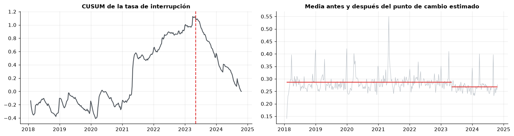
Punto de cambio estimado: 2023-05-08; media antes 0.286, después 0.267
Confinamiento COVID (23/03-31/05/2020): tasa media 0.318 vs 0.281 fuera; máximo 0.402
Paro nacional (28/04-15/06/2021): tasa media 0.353 vs 0.281 fuera; máximo 0.550
2.6.7 Deriva temporal (covariate shift y concept drift)#
def psi(a, b, bins=10):
q = np.unique(np.quantile(a, np.linspace(0, 1, bins + 1)))
pa = np.histogram(a, q)[0] / len(a) + 1e-6
pb = np.histogram(np.clip(b, q[0], q[-1]), q)[0] / len(b) + 1e-6
return float(((pa - pb) * np.log(pa / pb)).sum())
anio = train["semana_t1"].dt.year
ref = train[anio == 2019]
filas = []
for c in ["log_base8", "ratio_t", "cv8", "activas26", "n_envios8", "dist_km", "frac_caida_nacional_t"]:
fila = {"variable": c}
for a in [2020, 2021, 2022, 2023, 2024]:
fila[f"PSI 2019→{a}"] = psi(ref[c].dropna().values, train.loc[anio == a, c].dropna().values)
fila["KS 2019 vs 2024"] = stats.ks_2samp(ref[c].dropna(), train.loc[anio == 2024, c].dropna()).statistic
filas.append(fila)
drift = pd.DataFrame(filas).set_index("variable")
drift.round(3)
| PSI 2019→2020 | PSI 2019→2021 | PSI 2019→2022 | PSI 2019→2023 | PSI 2019→2024 | KS 2019 vs 2024 | |
|---|---|---|---|---|---|---|
| variable | ||||||
| log_base8 | 0.001 | 0.003 | 0.003 | 0.002 | 0.003 | 0.022 |
| ratio_t | 0.001 | 0.003 | 0.001 | 0.001 | 0.001 | 0.008 |
| cv8 | 0.002 | 0.006 | 0.002 | 0.001 | 0.001 | 0.015 |
| activas26 | 0.005 | 0.008 | 0.003 | 0.001 | 0.002 | 0.014 |
| n_envios8 | 0.001 | 0.002 | 0.001 | 0.000 | 0.002 | 0.018 |
| dist_km | 0.000 | 0.001 | 0.001 | 0.001 | 0.002 | 0.018 |
| frac_caida_nacional_t | 0.298 | 1.494 | 1.421 | 0.238 | 2.801 | 0.277 |
from sklearn.metrics import roc_auc_score
filas = []
for a in range(2018, 2025):
d = train[anio == a]
fila = {"año": a, "tasa": d[y].mean()}
for c in ["cv8", "n_envios8", "ratio_t", "dist_km"]:
au = roc_auc_score(d[y], d[c])
fila[f"AUC {c}"] = max(au, 1 - au)
filas.append(fila)
concepto = pd.DataFrame(filas).set_index("año")
concepto.round(3)
| tasa | AUC cv8 | AUC n_envios8 | AUC ratio_t | AUC dist_km | |
|---|---|---|---|---|---|
| año | |||||
| 2018 | 0.282 | 0.757 | 0.748 | 0.614 | 0.587 |
| 2019 | 0.281 | 0.753 | 0.742 | 0.607 | 0.583 |
| 2020 | 0.281 | 0.746 | 0.737 | 0.609 | 0.571 |
| 2021 | 0.297 | 0.743 | 0.735 | 0.619 | 0.577 |
| 2022 | 0.288 | 0.754 | 0.739 | 0.603 | 0.576 |
| 2023 | 0.274 | 0.762 | 0.752 | 0.596 | 0.581 |
| 2024 | 0.270 | 0.756 | 0.746 | 0.592 | 0.578 |
2.6.8 Heterogeneidad entre entidades del panel#
hm = train.assign(trim=train["semana_t1"].dt.to_period("Q").astype(str)) \
.pivot_table(index="mercado", columns="trim", values=y, aggfunc="mean")
hm = hm.loc[hm.mean(axis=1).sort_values().index]
fig, ax = plt.subplots(figsize=(13, 8))
sns.heatmap(hm, cmap="Reds", ax=ax, cbar_kws={"label": "tasa de interrupción"})
ax.set_yticklabels([t.get_text()[:30] for t in ax.get_yticklabels()], fontsize=7)
ax.set_title("Tasa trimestral de interrupción por central")
ax.set_xlabel("")
ax.set_ylabel("")
plt.tight_layout()
plt.show()
corr_m = hm.T.corr().where(np.triu(np.ones((len(hm), len(hm)), bool), 1)).stack()
print(f"Correlación media entre las series trimestrales de las centrales: {corr_m.mean():.3f}")
print(f"Desviación estándar entre centrales de la tasa media: {hm.mean(axis=1).std():.3f}")
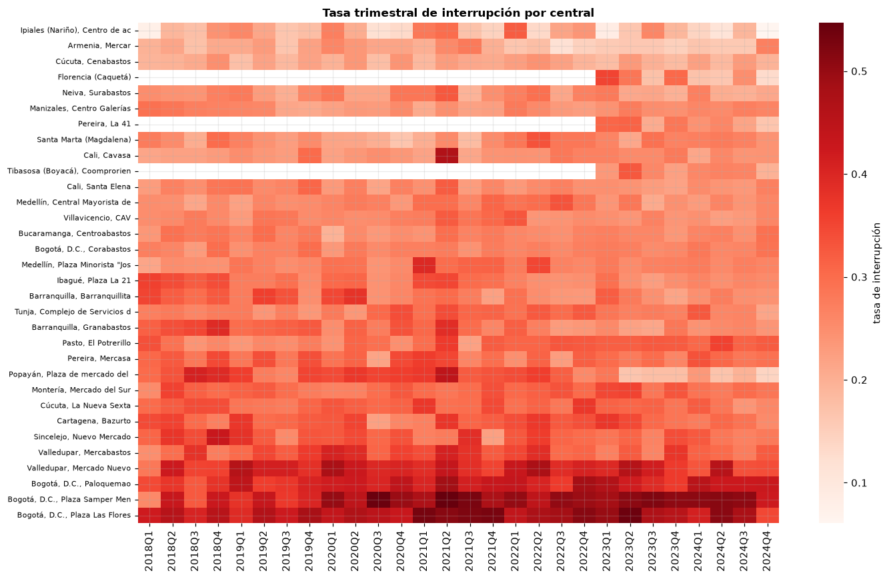
Correlación media entre las series trimestrales de las centrales: 0.119
Desviación estándar entre centrales de la tasa media: 0.066
Interpretación del componente temporal.
Validación. Las fechas vienen en formato día/mes/año sin hora ni zona horaria (hora local, UTC−5). Hay registros en 2.485 de 2.497 días; los 12 días sin datos son 1 de enero, 25 de diciembre y Viernes Santo, cuando las centrales cierran: no son huecos de recolección. La frecuencia semanal del panel es regular y no hay semanas duplicadas. Las separaciones de 14 días o más dentro de un corredor corresponden a semanas en que el corredor dejó de ser elegible (menos de 4 semanas activas), no a huecos de datos.
Estacionalidad. El volumen diario sigue un ciclo semanal marcado: de lunes a viernes llegan 20-23 mil toneladas diarias, el sábado cerca de la mitad y el domingo una cuarta parte. Por eso se agrega por semanas completas y se normaliza por días de encuesta. El volumen semanal es más bajo y más disperso en diciembre-enero y en Semana Santa. En la tasa de interrupción la estacionalidad anual explica una parte relevante de la variación (fuerza 0,41), las diferencias entre meses son significativas (Kruskal-Wallis p ≈ 5·10⁻¹³) y las semanas con festivos tienen más interrupciones: 27,6 % sin festivos, 29,0 % con uno y 37,8-40,0 % con dos o tres (Semana Santa y fin de año). Decisión: incluir la codificación cíclica de la semana del año (
sem_sin,sem_cos) y el número de festivos de t+1, que se conoce de antemano.Tendencia y estacionariedad. El volumen nacional tiene tendencia y cambios de nivel: el ADF rechaza la raíz unitaria (p = 0,003) pero el KPSS rechaza la estacionariedad en nivel y en tendencia (p ≤ 0,01), es decir, es estacionario solo a trozos. La tasa de interrupción, en cambio, es estacionaria (ADF p < 0,001; KPSS en nivel p ≥ 0,10) y su tendencia es débil (fuerza 0,08). Definir el objetivo como caída relativa al propio promedio del corredor fue lo que eliminó la tendencia del volumen.
Dependencia temporal. La ACF de la tasa semanal vale 0,44 en el rezago 1, decae en unas cuatro semanas y reaparece en los rezagos 51-53 (estacionalidad anual); la PACF solo es significativa en el rezago 1, un patrón de tipo AR(1) más un componente anual. Dentro de cada corredor, la correlación de la interrupción con la de la semana previa es 0,28 y cae a 0,10 a las 8 semanas; después se estabiliza en 0,11-0,13 hasta 52 semanas, lo que refleja heterogeneidad persistente entre corredores y estacionalidad anual. Decisión: usar rezagos (
ratio_t,ratio_t_1) y ventanas de 8 y 26 semanas; validar con bloques temporales separados por un hueco. La correlación cruzada muestra que la fracción nacional de corredores en caída en t anticipa la tasa de t+1 y que su poder se desvanece en unas cuatro semanas.Regímenes y eventos. El confinamiento de 2020 elevó la tasa a 31,8 % y el paro nacional de 2021 a 35,3 % (55 % en la peor semana), frente a 28,1 % fuera de esos periodos. El punto de cambio en la media se estima en mayo de 2023 (28,6 % → 26,7 %) y coincide con la ampliación del operativo del DANE a nuevas centrales (sección 1.7.1). Son choques comunes a muchos corredores que un modelo con variables individuales no puede anticipar; las variables
frac_caida_*capturan parcialmente su persistencia.Deriva. Las predictoras del corredor no presentan deriva de covariables (PSI < 0,01 y KS < 0,03 entre 2019 y cada año posterior), y la capacidad discriminante de las principales se mantiene estable (AUC de
cv8entre 0,74 y 0,76 en todos los años), por lo que no hay evidencia de deriva de concepto en las relaciones básicas. La excepción esfrac_caida_nacional_t, con PSI de 0,3 a 2,8: al ser un único valor por semana, su distribución anual cambia con cada choque. Queda en observación; en el modelo se evaluará su aporte.Heterogeneidad del panel. Las series trimestrales de las centrales están poco correlacionadas entre sí (0,12 en promedio) y sus niveles difieren (desviación estándar de 6,6 puntos): cada central tiene su propia dinámica, lo que justifica incluir la central como variable.
2.7 Componente espacial#
2.7.1 Validación de coordenadas#
divi = pd.read_csv(u.RAW / "divipola_municipios.csv", dtype=str)
divi["lat"] = divi["latitud"].str.replace(",", ".").astype(float)
divi["lon"] = divi["longitud"].str.replace(",", ".").astype(float)
divi["cod_mpio"] = divi["cod_mpio"].str.zfill(5)
decimales = divi["latitud"].str.split(",").str[1].str.len()
chk = pd.Series({
"Sistema de referencia": "EPSG:4326 (WGS84, grados decimales; centroides DIVIPOLA-DANE)",
"Municipios en DIVIPOLA": len(divi),
"Latitud fuera de [-90, 90]": int((~divi["lat"].between(-90, 90)).sum()),
"Longitud fuera de [-180, 180]": int((~divi["lon"].between(-180, 180)).sum()),
"Coordenadas nulas o (0,0)": int((divi[["lat", "lon"]].isna().any(axis=1) | ((divi["lat"] == 0) & (divi["lon"] == 0))).sum()),
"Posible inversión lat/lon (lat < -5 o lon > -60)": int(((divi["lat"] < -5) | (divi["lon"] > -60)).sum()),
"Fuera de la caja de Colombia (lat -4,3..13,6; lon -82..-66,8)": int((~divi["lat"].between(-4.3, 13.6) | ~divi["lon"].between(-82, -66.8)).sum()),
"Pares de coordenadas duplicados": int(divi.duplicated(["lat", "lon"]).sum()),
"Decimales de precisión (mediana)": int(decimales.median()),
"Filas del panel sin coordenadas de origen o destino": int(train[["lat_o", "lat_m"]].isna().any(axis=1).sum()),
})
chk.to_frame("resultado")
| resultado | |
|---|---|
| Sistema de referencia | EPSG:4326 (WGS84, grados decimales; centroides... |
| Municipios en DIVIPOLA | 1122 |
| Latitud fuera de [-90, 90] | 0 |
| Longitud fuera de [-180, 180] | 0 |
| Coordenadas nulas o (0,0) | 0 |
| Posible inversión lat/lon (lat < -5 o lon > -60) | 0 |
| Fuera de la caja de Colombia (lat -4,3..13,6; lon -82..-66,8) | 0 |
| Pares de coordenadas duplicados | 0 |
| Decimales de precisión (mediana) | 6 |
| Filas del panel sin coordenadas de origen o destino | 0 |
2.7.2 Mapas: puntos, densidad y coropletas#
mun = train.groupby("cod_mpio").agg(
lat=("lat_o", "first"), lon=("lon_o", "first"), toneladas_dia=("base8", "sum"),
tasa=(y, "mean"), n=(y, "size"), pdet=("pdet_origen", "first"),
depto=("depto_origen", "first"), corredores=("mercado", "nunique"))
mun["toneladas_dia"] = mun["toneladas_dia"] / 1e3 / train["semana"].nunique()
merc = train.groupby("mercado").agg(lat=("lat_m", "first"), lon=("lon_m", "first"))
fig, axes = plt.subplots(1, 3, figsize=(18, 7.5))
u.mapa_base(axes[0])
s = 5 + 300 * (mun["toneladas_dia"] / mun["toneladas_dia"].max()) ** 0.5
axes[0].scatter(mun["lon"], mun["lat"], s=s, c=np.where(mun["pdet"] == 1, "#e8590c", "#1971c2"),
alpha=0.6, edgecolor="white", lw=0.3)
axes[0].scatter(merc["lon"], merc["lat"], marker="*", s=90, c="black", zorder=5)
axes[0].set_title("Municipios de origen (tamaño = t/día; naranja = PDET)\n★ ciudades con central mayorista")
u.mapa_base(axes[1])
hb = axes[1].hexbin(train["lon_o"], train["lat_o"], C=train["base8"] / 1e3, reduce_C_function=np.sum,
gridsize=45, bins="log", cmap="YlGnBu", mincnt=1, alpha=0.9)
plt.colorbar(hb, ax=axes[1], shrink=0.6, label="log10 t/día acumuladas")
axes[1].set_title("Densidad del abastecimiento por origen (hexbin)")
sm = u.coropleta(axes[2], np.log10(mun["toneladas_dia"].clip(lower=1e-3)), cmap="viridis")
plt.colorbar(sm, ax=axes[2], shrink=0.6, label="log10 t/día")
axes[2].set_title("Coropleta: abastecimiento promedio por municipio de origen")
plt.tight_layout()
plt.show()
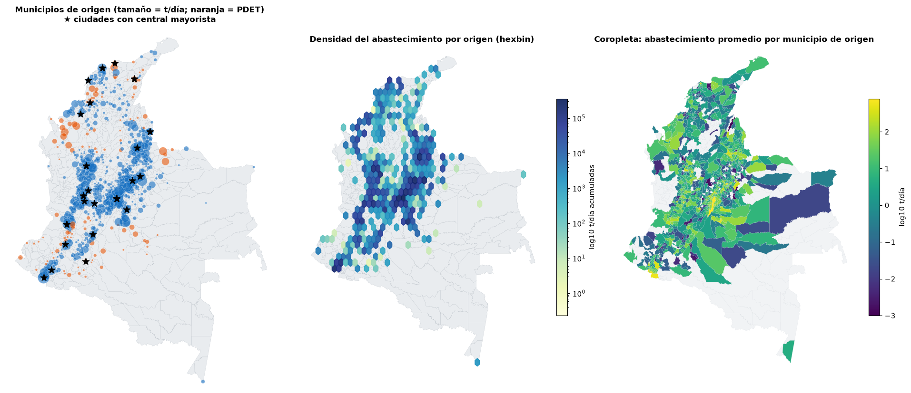
mun_ok = mun[mun["n"] >= 52].copy()
fig, axes = plt.subplots(1, 2, figsize=(13, 7.5))
sm = u.coropleta(axes[0], mun_ok["tasa"], cmap="Reds", vmin=0.1, vmax=0.6)
plt.colorbar(sm, ax=axes[0], shrink=0.6, label="tasa de interrupción")
axes[0].set_title(f"Tasa de interrupción por municipio de origen\n({len(mun_ok)} municipios con ≥ 52 corredor-semanas)")
cv_m = train.groupby("cod_mpio")["cv8"].mean()
sm = u.coropleta(axes[1], cv_m[cv_m.index.isin(mun_ok.index)], cmap="Purples")
plt.colorbar(sm, ax=axes[1], shrink=0.6, label="cv8 medio")
axes[1].set_title("Variabilidad media de los corredores (cv8)")
plt.tight_layout()
plt.show()
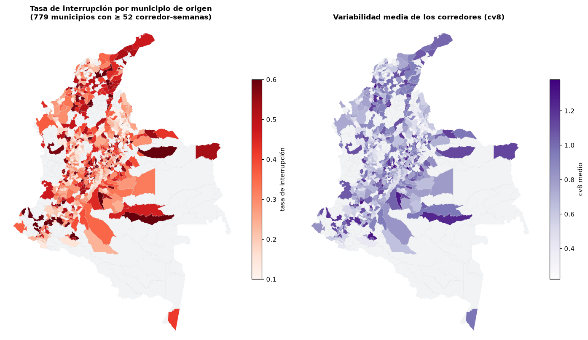
2.7.3 Patrón de puntos y cobertura#
from sklearn.cluster import DBSCAN
from sklearn.neighbors import BallTree
R = 6371.0
todos = divi[["lat", "lon"]].to_numpy()
orig = mun[["lat", "lon"]].to_numpy()
def nn_media(pts):
tree = BallTree(np.radians(pts), metric="haversine")
d, _ = tree.query(np.radians(pts), k=2)
return d[:, 1].mean() * R
area = 1_141_748 # km² de Colombia continental
ce_orig = nn_media(orig) / (0.5 / np.sqrt(len(orig) / area))
ce_todos = nn_media(todos) / (0.5 / np.sqrt(len(todos) / area))
print(f"Índice de Clark-Evans (R < 1 agrupado, R > 1 disperso): orígenes {ce_orig:.3f}; todos los municipios {ce_todos:.3f}")
# Función L de Ripley con envolvente de etiquetado aleatorio sobre todos los municipios
def l_ripley(pts, radios):
tree = BallTree(np.radians(pts), metric="haversine")
n = len(pts)
cuenta = np.array([tree.query_radius(np.radians(pts), r / R, count_only=True).sum() - n for r in radios])
K = area * cuenta / (n * (n - 1))
return np.sqrt(K / np.pi) - radios
radios = np.array([10, 20, 30, 50, 75, 100, 150, 200])
L_obs = l_ripley(orig, radios)
sims = np.array([l_ripley(todos[rng.choice(len(todos), len(orig), replace=False)], radios) for _ in range(99)])
fig, ax = plt.subplots(figsize=(7, 3.8))
ax.fill_between(radios, sims.min(0), sims.max(0), color="#dee2e6", label="envolvente (99 etiquetados aleatorios)")
ax.plot(radios, L_obs, "o-", color="#e03131", label="orígenes observados")
ax.set_xlabel("radio (km)")
ax.set_ylabel("L(d) - d")
ax.set_title("Función L de Ripley")
ax.legend(fontsize=8)
plt.tight_layout()
plt.show()
db = DBSCAN(eps=25 / R, min_samples=5, metric="haversine").fit(np.radians(orig))
mun["cluster_db"] = db.labels_
print(f"DBSCAN (haversine, eps = 25 km, min 5): {len(set(db.labels_) - {-1})} clusters; "
f"{(db.labels_ == -1).mean():.1%} de orígenes aislados")
top_c = mun[mun["cluster_db"] >= 0].groupby("cluster_db").agg(
municipios=("lat", "size"), t_dia=("toneladas_dia", "sum"), depto=("depto", lambda s: s.mode()[0])) \
.sort_values("t_dia", ascending=False).head(6)
print(top_c.round(1).to_string())
sin_cob = divi[~divi["cod_mpio"].isin(mun.index)]
print(f"\nMunicipios sin ningún corredor regular en entrenamiento: {len(sin_cob)} de {len(divi)}")
print(sin_cob["dpto"].map(REGION).value_counts().to_string())
Índice de Clark-Evans (R < 1 agrupado, R > 1 disperso): orígenes 0.764; todos los municipios 0.878
DBSCAN (haversine, eps = 25 km, min 5): 10 clusters; 19.8% de orígenes aislados
municipios t_dia depto
cluster_db
3 364 9659.3 CUNDINAMARCA
0 232 5737.3 ANTIOQUIA
8 31 356.7 HUILA
2 40 341.5 ATLÁNTICO
6 35 219.6 SUCRE
7 5 173.2 CÓRDOBA
Municipios sin ningún corredor regular en entrenamiento: 210 de 1122
dpto
Andina 75
Pacífica 46
Caribe 40
Amazonía 39
Orinoquía 10
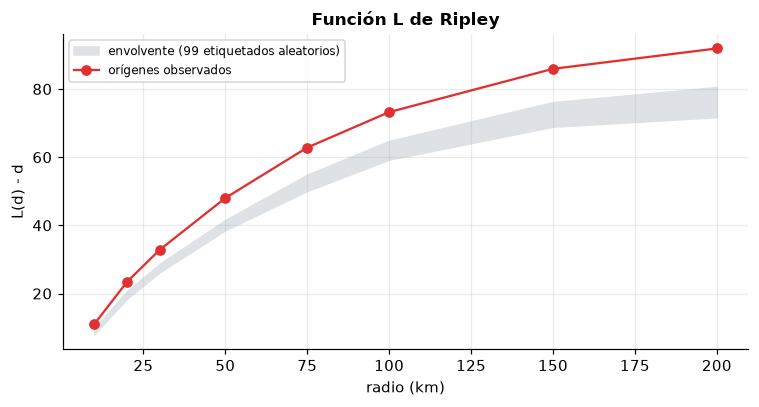
2.7.4 Autocorrelación espacial#
Matriz de pesos. Se usan los k = 8 vecinos más cercanos (distancia haversine entre centroides), estandarizada por filas. Se prefiere a la contigüidad porque los municipios de origen no forman una superficie continua (hay huecos sin cobertura) y a una banda fija de distancia porque la densidad municipal es muy desigual: 20 km en el altiplano incluyen decenas de municipios y en la Orinoquía ninguno. Con k = 8 todos los municipios tienen vecinos.
W = u.pesos_knn(mun_ok["lat"].values, mun_ok["lon"].values, k=8)
I, p, EI = u.moran_i(mun_ok["tasa"].values, W)
print(f"I de Moran global (tasa de interrupción por municipio): I = {I:.3f}, E[I] = {EI:.4f}, p = {p:.3f}")
for c in ["cv8", "log_base8"]:
v = train.groupby("cod_mpio")[c].mean().loc[mun_ok.index]
Ic, pc, _ = u.moran_i(v.values, W)
print(f"I de Moran de {c}: {Ic:.3f} (p = {pc:.3f})")
for k_ in [4, 12]:
Wk = u.pesos_knn(mun_ok["lat"].values, mun_ok["lon"].values, k=k_)
print(f"Sensibilidad k = {k_}: I = {u.moran_i(mun_ok['tasa'].values, Wk)[0]:.3f}")
Ii, pl, cuad = u.lisa(mun_ok["tasa"].values, W, permutaciones=499)
mun_ok["lisa"] = np.where(pl < 0.05, cuad, "No significativo")
mun_ok["gi"] = u.getis_ord_gi_star(mun_ok["tasa"].values, mun_ok["lat"].values, mun_ok["lon"].values, k=8)
print("\nClasificación LISA (p < 0,05):")
print(mun_ok["lisa"].value_counts().to_string())
colores = {"Alto-Alto": "#c92a2a", "Bajo-Bajo": "#1864ab", "Alto-Bajo": "#ff8787",
"Bajo-Alto": "#74c0fc", "No significativo": "#dee2e6"}
fig, axes = plt.subplots(1, 3, figsize=(18, 7))
z = (mun_ok["tasa"] - mun_ok["tasa"].mean()) / mun_ok["tasa"].std()
axes[0].scatter(z, W @ z.values, s=8, alpha=0.5, color="#495057")
b = np.polyfit(z, W @ z.values, 1)
xx = np.linspace(z.min(), z.max(), 10)
axes[0].plot(xx, np.polyval(b, xx), color="#e03131")
axes[0].axhline(0, color="k", lw=0.5)
axes[0].axvline(0, color="k", lw=0.5)
axes[0].set_xlabel("tasa estandarizada")
axes[0].set_ylabel("rezago espacial")
axes[0].set_title(f"Diagrama de dispersión de Moran (I = {I:.3f})")
u.mapa_base(axes[1])
for cat_, col in colores.items():
d = mun_ok[mun_ok["lisa"] == cat_]
axes[1].scatter(d["lon"], d["lat"], s=14, color=col, label=f"{cat_} ({len(d)})", edgecolor="none")
axes[1].legend(fontsize=7, loc="lower left")
axes[1].set_title("Clusters LISA")
u.mapa_base(axes[2])
sc = axes[2].scatter(mun_ok["lon"], mun_ok["lat"], c=mun_ok["gi"].clip(-4, 4), cmap="RdBu_r", s=14,
vmin=-4, vmax=4)
plt.colorbar(sc, ax=axes[2], shrink=0.6, label="Gi* (z)")
axes[2].set_title("Hotspots Getis-Ord Gi* (|z| > 1,96 significativo)")
plt.tight_layout()
plt.show()
print("Hotspots (Gi* > 1,96) por departamento:")
print(mun_ok.loc[mun_ok["gi"] > 1.96, "depto"].value_counts().head(8).to_string())
print("Coldspots (Gi* < -1,96) por departamento:")
print(mun_ok.loc[mun_ok["gi"] < -1.96, "depto"].value_counts().head(8).to_string())
I de Moran global (tasa de interrupción por municipio): I = 0.247, E[I] = -0.0013, p = 0.001
I de Moran de cv8: 0.254 (p = 0.001)
I de Moran de log_base8: 0.238 (p = 0.001)
Sensibilidad k = 4: I = 0.276
Sensibilidad k = 12: I = 0.223
Clasificación LISA (p < 0,05):
lisa
No significativo 603
Bajo-Bajo 84
Alto-Alto 57
Bajo-Alto 27
Alto-Bajo 8
Hotspots (Gi* > 1,96) por departamento:
depto
CESAR 17
CUNDINAMARCA 13
SANTANDER 12
NARIÑO 9
SUCRE 9
CAUCA 8
LA GUAJIRA 8
CÓRDOBA 5
Coldspots (Gi* < -1,96) por departamento:
depto
NORTE DE SANTANDER 30
ANTIOQUIA 20
SANTANDER 18
CALDAS 13
CUNDINAMARCA 10
NARIÑO 10
QUINDÍO 4
CAUCA 2
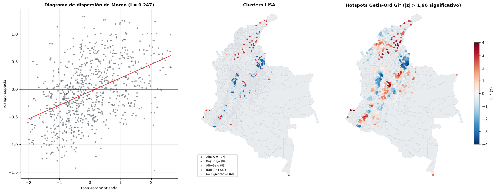
# Semivariograma empírico de la tasa municipal
from sklearn.metrics.pairwise import haversine_distances
D = haversine_distances(np.radians(mun_ok[["lat", "lon"]].values)) * R
dv = (mun_ok["tasa"].values[:, None] - mun_ok["tasa"].values[None, :]) ** 2 / 2
iu = np.triu_indices(len(mun_ok), 1)
bordes = np.array([0, 25, 50, 75, 100, 150, 200, 300, 400, 600, 800])
cls = np.digitize(D[iu], bordes)
gamma = pd.Series(dv[iu]).groupby(cls).mean()
centros = [(bordes[i - 1] + bordes[i]) / 2 for i in gamma.index if i < len(bordes)]
fig, ax = plt.subplots(figsize=(7, 3.5))
ax.plot(centros, gamma.values[:len(centros)], "o-", color="#1971c2")
ax.axhline(mun_ok["tasa"].var(), color="#868e96", ls="--", label="varianza total")
ax.set_xlabel("distancia (km)")
ax.set_ylabel("semivarianza")
ax.set_title("Semivariograma empírico de la tasa de interrupción")
ax.legend()
plt.tight_layout()
plt.show()
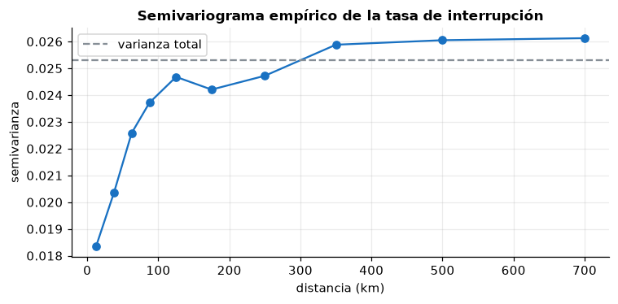
2.7.5 Heterogeneidad espacial, distancias y escala (MAUP)#
print("Tasa de interrupción por región de origen:")
print(train.groupby("region_origen")[y].agg(["mean", "size"]).round(3).to_string())
print("\nKruskal-Wallis entre regiones (tasa municipal):",
stats.kruskal(*[g["tasa"] for _, g in mun_ok.assign(r=mun_ok["depto"].map(REGION)).groupby("r")]))
train["dist_bin"] = pd.cut(train["dist_km"], [-1, 25, 100, 250, 500, 2000],
labels=["0-25", "25-100", "100-250", "250-500", ">500"])
train["region_mercado"] = train["depto_mercado"].map(REGION)
tab = train.pivot_table(index="region_mercado", columns="dist_bin", values=y, aggfunc="mean")
fig, ax = plt.subplots(figsize=(8, 3.5))
sns.heatmap(tab, annot=True, fmt=".2f", cmap="Reds", ax=ax)
ax.set_title("Tasa de interrupción por región de la central y distancia (km)")
plt.tight_layout()
plt.show()
# MAUP: la misma variable agregada a departamento
dep = train.groupby("depto_origen").agg(lat=("lat_o", "mean"), lon=("lon_o", "mean"), tasa=(y, "mean"), n=(y, "size"))
dep = dep[dep["n"] >= 200]
Wd = u.pesos_knn(dep["lat"].values, dep["lon"].values, k=4)
Id, pd_, _ = u.moran_i(dep["tasa"].values, Wd)
print(f"\nMAUP. I de Moran por municipio (k=8): {I:.3f}; por departamento (k=4, n={len(dep)}): {Id:.3f} (p = {pd_:.3f})")
print(f"Dispersión de la tasa: entre municipios sd = {mun_ok['tasa'].std():.3f}; entre departamentos sd = {dep['tasa'].std():.3f}")
Tasa de interrupción por región de origen:
mean size
region_origen
Amazonía 0.366 6560
Andina 0.264 401541
Caribe 0.347 78034
Orinoquía 0.346 37246
Pacífica 0.277 98863
Kruskal-Wallis entre regiones (tasa municipal): KruskalResult(statistic=np.float64(39.25132278470205), pvalue=np.float64(6.18146532405209e-08))
MAUP. I de Moran por municipio (k=8): 0.247; por departamento (k=4, n=29): 0.012 (p = 0.272)
Dispersión de la tasa: entre municipios sd = 0.159; entre departamentos sd = 0.088
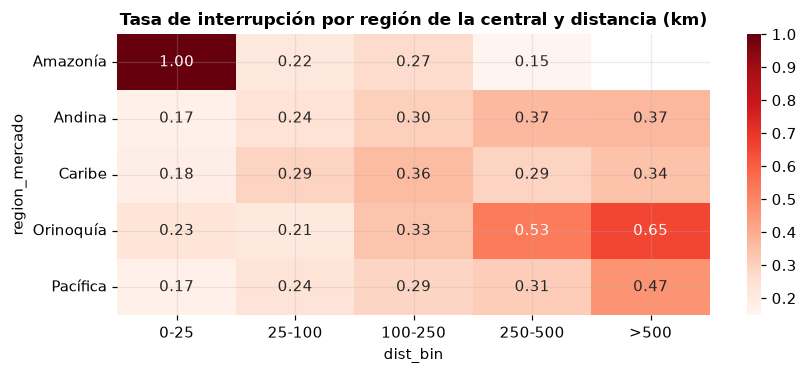
Interpretación del componente espacial.
Validación. Las coordenadas son centroides municipales de la DIVIPOLA en EPSG:4326 con seis decimales. No hay coordenadas nulas, (0,0), invertidas, fuera de rango ni fuera de Colombia, ni pares duplicados. Todas las distancias se calculan con haversine sobre la esfera, nunca con distancia euclidiana sobre grados.
Patrón de puntos y cobertura. Los municipios de origen están más agrupados que los municipios del país (Clark-Evans 0,76 frente a 0,88) y la función L de Ripley queda por encima de la envolvente de etiquetado aleatorio desde 20 km: la oferta que llega a las centrales se concentra en el altiplano cundiboyacense (364 municipios en un solo cluster DBSCAN, 9.659 t/día) y en Antioquia. Hay 210 municipios sin ningún corredor regular, sobre todo en la Amazonía, el Pacífico y la Orinoquía. Es un sesgo de muestreo espacial: el modelo no aprenderá nada sobre territorios que no abastecen a las centrales, varios de ellos PDET.
Autocorrelación espacial. La tasa de interrupción municipal tiene autocorrelación positiva y significativa (I de Moran = 0,25, p = 0,001), robusta a la elección de k (0,28 con k = 4; 0,22 con k = 12). Las mismas magnitudes aparecen en
cv8(0,25) ylog_base8(0,24): parte del patrón espacial de las interrupciones se explica porque los corredores pequeños e irregulares se agrupan en el espacio. El LISA identifica 57 municipios Alto-Alto, concentrados en el Caribe (Cesar, La Guajira, Sucre, Córdoba) y en la costa nariñense, y 84 Bajo-Bajo en Norte de Santander, Antioquia y el Eje Cafetero. El Gi* confirma los mismos hotspots y coldspots.Semivariograma. La semivarianza crece hasta unos 125-350 km y luego se estabiliza en la varianza total. El efecto pepita es alto (≈ 0,018 de una meseta de ≈ 0,026, unos dos tercios): buena parte de la variación es local o de cada corredor y la dependencia espacial explica el resto hasta un alcance de unos 300 km.
Heterogeneidad. La tasa es menor en la región Andina (26,4 %) y el Pacífico (27,7 %) que en el Caribe (34,7 %), la Orinoquía (34,6 %) y la Amazonía (36,6 %) (Kruskal-Wallis p ≈ 6·10⁻⁸). El efecto de la distancia cambia según la región de la central (tabla de calor): la relación distancia-interrupción no es la misma en todo el país.
Escala (MAUP). Agregada por departamento, la autocorrelación desaparece (I = 0,01, p = 0,27) y la dispersión se reduce a la mitad (0,09 frente a 0,16). La dependencia opera a escala municipal y subregional; conclusiones departamentales ocultarían los hotspots.
Ingeniería de características espaciales. Se usan la distancia haversine origen-central, las marcas de mismo departamento y corredor local, el departamento de origen (heterogeneidad regional) y la marca PDET. No se usan latitud y longitud crudas como predictoras: en un modelo lineal solo representarían gradientes norte-sur y este-oeste, y en modelos flexibles permitirían memorizar ubicaciones, lo que infla el desempeño y no se transfiere a territorios nuevos.
Consecuencia para el modelado. Como municipios cercanos se parecen, una validación aleatoria sería optimista si el objetivo fuera predecir en zonas nuevas. Se añade una validación por bloques espaciales (GroupKFold por departamento de origen, bloques de 100-300 km, del orden del alcance del semivariograma).
2.8 Componente espacio-temporal#
anio = train["semana_t1"].dt.year
mun_anio = train.groupby([anio.rename("anio"), "cod_mpio"])[y].agg(["mean", "size"]).reset_index()
mun_anio = mun_anio[mun_anio["size"] >= 20]
fig, axes = plt.subplots(2, 4, figsize=(18, 10))
for ax, a in zip(axes.ravel(), range(2018, 2025)):
v = mun_anio[mun_anio["anio"] == a].set_index("cod_mpio")["mean"]
sm = u.coropleta(ax, v, cmap="Reds", vmin=0.1, vmax=0.6)
ax.set_title(str(a))
axes.ravel()[-1].axis("off")
fig.colorbar(sm, ax=axes.ravel().tolist(), shrink=0.5, label="tasa de interrupción")
fig.suptitle("Tasa de interrupción por municipio de origen y año", fontweight="bold")
plt.show()
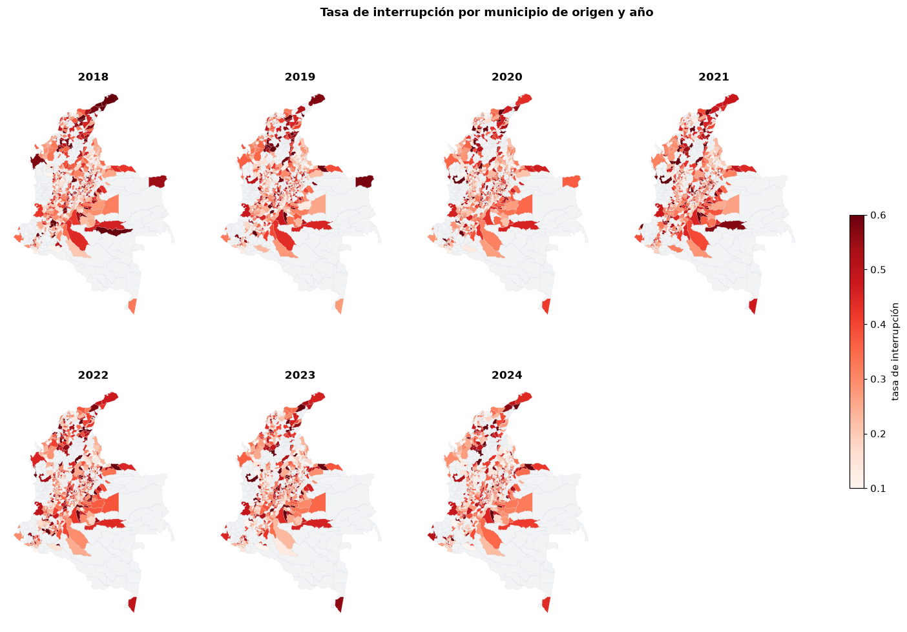
reg_t = train.assign(trim=train["semana_t1"].dt.to_period("Q").dt.start_time) \
.groupby(["trim", "region_origen"])[y].mean().unstack()
fig, ax = plt.subplots(figsize=(12, 4))
reg_t.plot(ax=ax, lw=1.4)
ax.set_title("Tasa trimestral de interrupción por región de origen")
ax.set_xlabel("")
plt.tight_layout()
plt.show()
print("Correlación entre las series regionales:")
print(reg_t.corr().round(2).to_string())
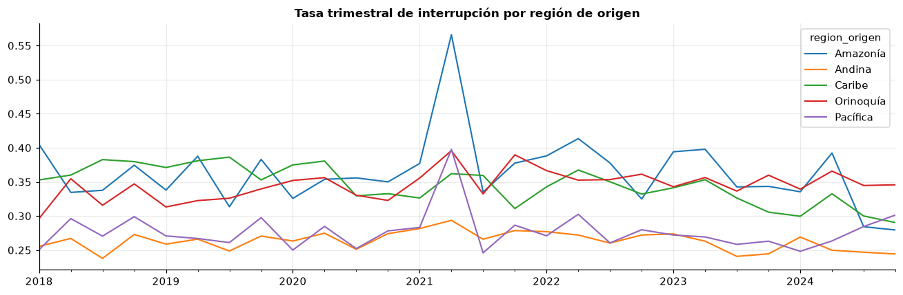
Correlación entre las series regionales:
region_origen Amazonía Andina Caribe Orinoquía Pacífica
region_origen
Amazonía 1.00 0.60 0.27 0.40 0.62
Andina 0.60 1.00 0.17 0.49 0.51
Caribe 0.27 0.17 1.00 -0.25 0.08
Orinoquía 0.40 0.49 -0.25 1.00 0.55
Pacífica 0.62 0.51 0.08 0.55 1.00
# Interacción espacio-tiempo: I de Moran y hotspots por año
filas, hot_prev = [], None
for a in range(2018, 2025):
d = train[anio == a].groupby("cod_mpio").agg(lat=("lat_o", "first"), lon=("lon_o", "first"),
tasa=(y, "mean"), n=(y, "size"))
d = d[d["n"] >= 20]
Wa = u.pesos_knn(d["lat"].values, d["lon"].values, k=8)
Ia, pa, _ = u.moran_i(d["tasa"].values, Wa, permutaciones=199)
gi = u.getis_ord_gi_star(d["tasa"].values, d["lat"].values, d["lon"].values, k=8)
hot = set(d.index[gi > 1.96])
jac = len(hot & hot_prev) / len(hot | hot_prev) if hot_prev else np.nan
filas.append({"año": a, "municipios": len(d), "I de Moran": Ia, "p": pa, "hotspots": len(hot),
"Jaccard con año previo": jac})
hot_prev = hot
pd.DataFrame(filas).set_index("año").round(3)
| municipios | I de Moran | p | hotspots | Jaccard con año previo | |
|---|---|---|---|---|---|
| año | |||||
| 2018 | 685 | 0.229 | 0.005 | 66 | NaN |
| 2019 | 676 | 0.226 | 0.005 | 66 | 0.517 |
| 2020 | 664 | 0.192 | 0.005 | 70 | 0.374 |
| 2021 | 686 | 0.177 | 0.005 | 66 | 0.417 |
| 2022 | 692 | 0.186 | 0.005 | 77 | 0.474 |
| 2023 | 695 | 0.187 | 0.005 | 81 | 0.374 |
| 2024 | 684 | 0.219 | 0.005 | 80 | 0.412 |
# Prueba de Knox: ¿los eventos de interrupción masiva están agrupados en espacio y tiempo a la vez?
ev = train.groupby(["cod_mpio", "semana_t1"]).agg(tasa=(y, "mean"), n=(y, "size"),
lat=("lat_o", "first"), lon=("lon_o", "first")).reset_index()
ev = ev[(ev["n"] >= 3) & (ev["tasa"] >= 0.67)]
ev = ev.sample(min(3000, len(ev)), random_state=u.SEMILLA)
Dsp = haversine_distances(np.radians(ev[["lat", "lon"]].values)) * R
tt = ev["semana_t1"].values.astype("datetime64[D]").astype(int) / 7
iu = np.triu_indices(len(ev), 1)
cerca_e = Dsp[iu] <= 50
def knox(t):
return int((cerca_e & (np.abs(t[:, None] - t[None, :])[iu] <= 1)).sum())
obs = knox(tt)
sim = np.array([knox(rng.permutation(tt)) for _ in range(99)])
print(f"Eventos (municipio-semana con ≥ 3 corredores y ≥ 2/3 interrumpidos), muestra: {len(ev):,}")
print(f"Knox (≤ 50 km y ≤ 1 semana): observado {obs:,}; esperado bajo independencia {sim.mean():,.0f} "
f"(rango sim. {sim.min():,}-{sim.max():,}); razón {obs / sim.mean():.2f}; p = {(np.sum(sim >= obs) + 1) / 100:.2f}")
Eventos (municipio-semana con ≥ 3 corredores y ≥ 2/3 interrumpidos), muestra: 2,881
Knox (≤ 50 km y ≤ 1 semana): observado 2,312; esperado bajo independencia 1,472 (rango sim. 1,353-1,604); razón 1.57; p = 0.01
# Autocorrelación espacio-temporal: la tasa de un municipio en t+1 frente a la de sus vecinos en t
mt = train.pivot_table(index="semana_t1", columns="cod_mpio", values=y, aggfunc="mean")
mt = mt.loc[:, mt.notna().mean() > 0.8]
coords = mun.loc[mt.columns, ["lat", "lon"]]
Wst = u.pesos_knn(coords["lat"].values, coords["lon"].values, k=8)
M = mt.to_numpy()
M = M - np.nanmean(M, axis=0)
M = np.where(np.isnan(M), 0, M)
lag_esp = M @ Wst.T
pares = {
"propio t vs propio t+1": np.corrcoef(M[:-1].ravel(), M[1:].ravel())[0, 1],
"vecinos t vs propio t+1": np.corrcoef(lag_esp[:-1].ravel(), M[1:].ravel())[0, 1],
"vecinos t+1 vs propio t+1 (contemporánea)": np.corrcoef(lag_esp.ravel(), M.ravel())[0, 1],
}
pd.Series(pares, name="correlación (desviaciones de la media municipal)").round(3).to_frame()
| correlación (desviaciones de la media municipal) | |
|---|---|
| propio t vs propio t+1 | 0.155 |
| vecinos t vs propio t+1 | 0.042 |
| vecinos t+1 vs propio t+1 (contemporánea) | 0.070 |
Interpretación del componente espacio-temporal.
Persistencia y desplazamiento de hotspots. La autocorrelación espacial es significativa en todos los años, pero se debilita en 2020-2021 (I = 0,19 y 0,18) y se recupera en 2024 (0,22): durante los choques nacionales las interrupciones se generalizan y el patrón espacial se diluye. Los hotspots cambian: el índice de Jaccard entre años consecutivos va de 0,37 a 0,52, es decir, menos de la mitad de los municipios calientes de un año lo siguen siendo al año siguiente. En los mapas anuales el Caribe (La Guajira, Cesar, Magdalena) aparece con tasas altas en todos los años, mientras que en la zona andina los municipios calientes cambian de un año a otro.
Dinámicas regionales. Las series de la región Andina, el Pacífico, la Amazonía y la Orinoquía están correlacionadas (0,4-0,6), mientras que el Caribe tiene una dinámica propia (correlación de 0,08 a 0,27 con las demás y −0,25 con la Orinoquía). Una hipótesis para explorar es que responda a choques propios (régimen de lluvias, corredores viales distintos).
Interacción espacio-tiempo. La prueba de Knox indica que los eventos de interrupción masiva (municipio-semana con al menos dos tercios de sus corredores interrumpidos) ocurren juntos en espacio y tiempo más de lo esperado: 57 % más pares a menos de 50 km y una semana de lo que produciría la independencia (p = 0,01). Son choques locales (lluvias, cierres de vías, orden público) que afectan a varios municipios vecinos a la vez.
Autocorrelación espacio-temporal. Una vez descontado el nivel medio de cada municipio, su propia desviación en t predice la de t+1 (0,16), pero la de sus vecinos en t aporta poco (0,04). Para anticipar la semana siguiente importa más la historia del propio corredor que la de sus vecinos; un rezago espacial se deja para modelos posteriores.
Consecuencias para el modelado. El objetivo principal es predecir el futuro de corredores conocidos, por lo que el esquema principal es la partición cronológica con hueco de 10 semanas y validación cruzada con bloques de semanas separados por un hueco de 8. El objetivo secundario es generalizar a territorios no vistos, evaluado con GroupKFold por departamento de origen. Ambos resultados se reportan por separado. El riesgo de fuga por vecindad temporal se controla con los huecos; el de vecindad espacial, con bloques departamentales del orden del alcance del semivariograma.